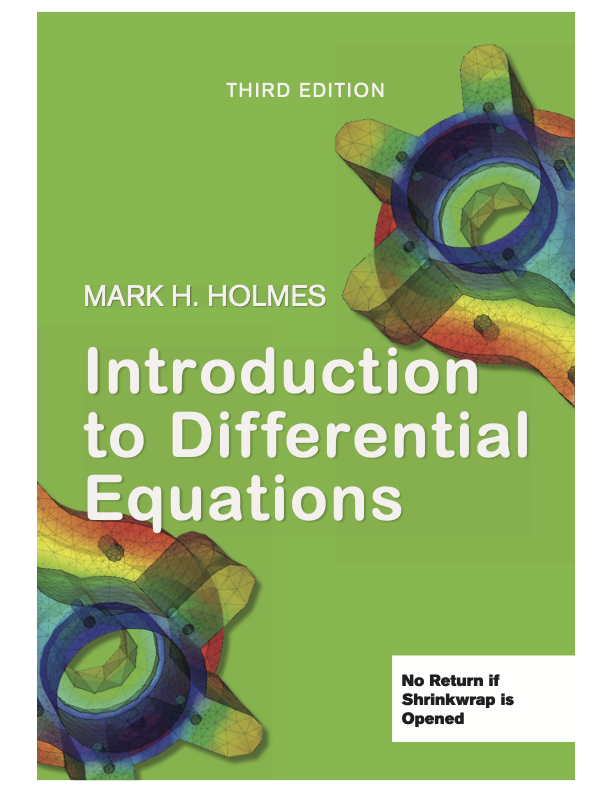

Introduction to Differential Equations 3ed
by Mark H. Holmes
|
Ordering: The ISBN is 978-1-71147-191-4. It is available from Amazon,
as well as directly from the publisher XanEdu Publishing. It costs about $55, and you get a softcover (full color) spiral bound textbook as well as access to a digital version.
Preface and table of contents
Chapter 3 snippet
Chapter 4 snippet
Index
Typos
Author Information
- Mark H. Holmes
- Department of Mathematical Sciences
- Rensselaer Polytechnic Institute, Troy, NY 12180 USA
- holmes (@rpi.edu)
Page Last Updated: 12/28/2023
|
|
| |
 |
Off Campus Users
For those unable to get past the campus firewall (i.e., the links below do not work), the files are also kept on GitHub.
You can reach the site HERE
Figures and Tables in Text
Table 1.1 for Exercise 7 on pg 5
Table 4.1 phase plane examples (pg 105)
Table 6.1 Laplace transforms (pg 158)
Figures all (but one) of the figures in text (zip file)
Videos for Chapter 3
Below are links to MATLAB generated videos related to the examples in the chapter.
Zipped folder including all Chapter 3 videos.
Section 3.10.2: Linear Oscillator
Example A for u(0) = 0, u'(0) = 1, k = 4
Example B for u(0) = 1, u'(0) = 1, k = 4
Example C for u(0) = 0, u'(0) = -3, k = 4
Example D for u(0) = 0, u'(0) = 1, k = 16
Section 3.10.3: Damped Oscillator (the damping mechanism is not shown in the videos)
Example A for u(0) = 0, u'(0) = 1, k = 4, c = 5 (over)
Example B for u(0) = 0, u'(0) = 1, k = 4, c = 4 (critical)
Example C for u(0) = 0, u'(0) = 1, k = 4, c = 0.5 (under)
Example D for u(0) = 0, u'(0) = 1, k = 4, c = 0.01 (weak)
Videos for Chapter 4
Below are links to MATLAB generated videos related to the examples in the chapter.
Zipped folder including all Chapter 4 videos.
Section 4.6: Phase Plane
Two Positive Eigenvalues
One Positive and One Negative Eigenvalue
Complex Eigenvalues
Videos for Chapter 5
Below are links to MATLAB generated videos related to the examples in the chapter.
Zipped folder including all Chapter 5 videos.
Section 5.1: Non-Linear Systems
Solution Curves video for Figure 5.2
Section 5.3: Periodic Solutions
Pendulum video for Figure 5.11
Pendulum video for circulating motion
Pendulum video for separatrix motion
Videos and Extras for Chapter 7
Below are links to MATLAB generated videos related to the examples in the chapter.
Zipped folder including all Chapter 7 videos.
Section 7.3: Diffusion Equation (D = 1)
Example 1 for u(x,0) = 3sin(pi*x)
Example 2 for u(x,0) = 3sin(pi*x/2)-4sin(3*pi*x/2)+5sin(2*pi*x)
Example 3 for u(x,0) = bump
Section 7.4: Fourier Series
Example 3 g(x) = piecewise linear
Example 4 g(x) = step
Example 5 g(x) = step (cosine series)
Example A g(x) = exp(x)
Example B g(x) = cos(3pi*x)
Example C g(x) = x^2
Section 7.5: Wave Equation (c = 1)
Example 1 u(x,0) = 3cos(pi*x)
Example A u(x,0) = x^2(1-x)^2
Example B u(x,0) = x^2(1-x)^2(x-0.25)
Example C u(x,0) = x^2(1-x)^2sin(17x/3)
Example D u(x,0) = bump
Chapter Extras
Diffusion equation, Einstein, and AI Generated Images
Wave equation and an elastic string